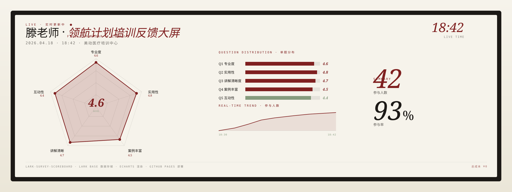
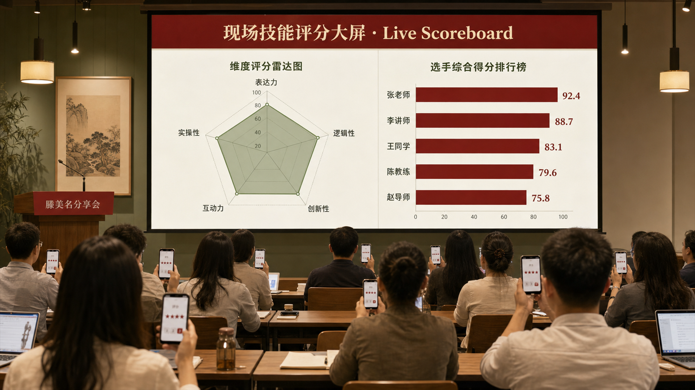
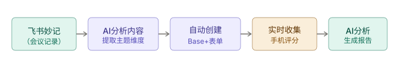
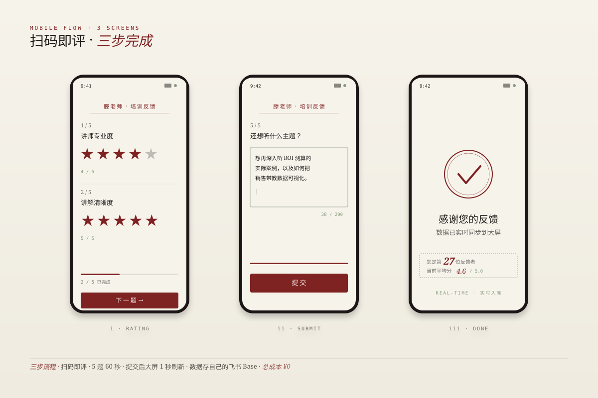
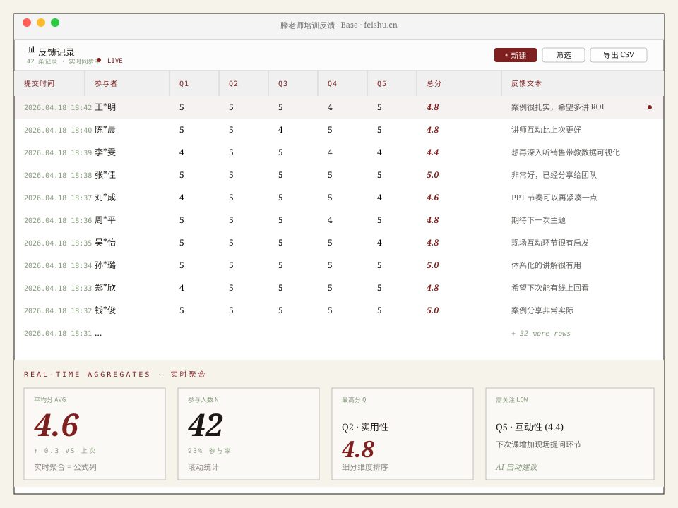
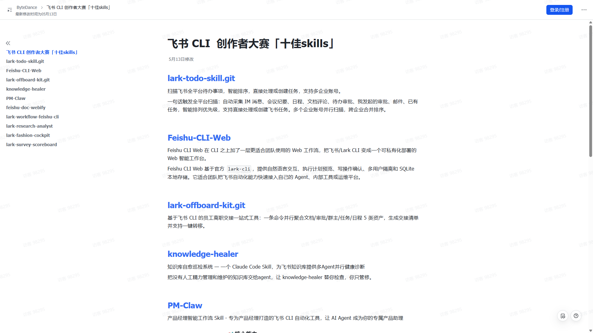
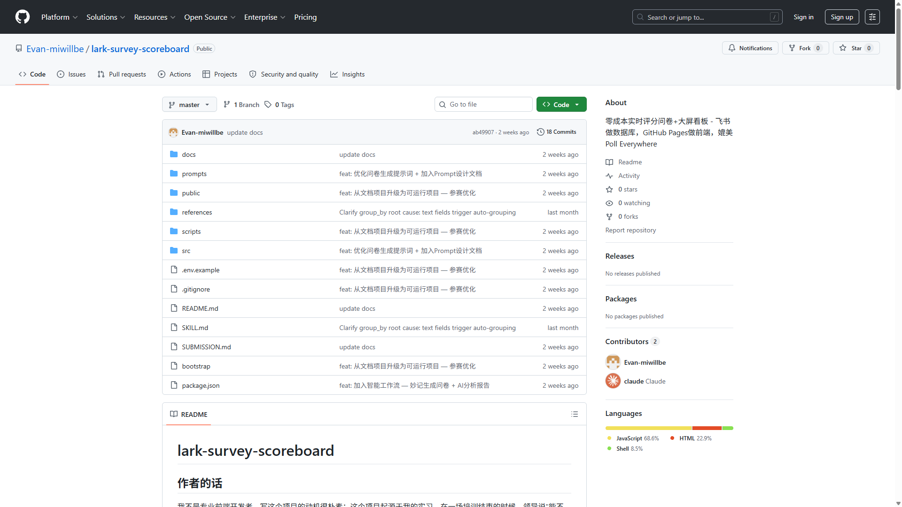

2026 年 4 月。美动医疗 HR 培训方向实习。一场销售经理代教培训刚结束， 领导转头问我："能不能做个实时的反馈问卷？"
Poll Everywhere 是很好的工具，但很多想实现的功能并不能通过现成网站实现。 手动编十几道题再计算均分，是一件很麻烦的事—— 而且之前用飞书看板做过类似的研究，实时显示这一步暂时做不到。
其实不是什么改变世界的伟大产品。就是一个来源于实习真实需求的解决方案。 花了 ¥0，省了重复劳动，数据还在自己手里。

工具的核心是把"重复劳动"压缩到接近 0——一个培训结束， 管理者最理想的体验是：说一句话，几分钟后拿到结果。所有中间步骤都不应该手动做。
培训过程飞书妙记自动录制，结束后得到完整的转写文本和总结。
Claude 读完总结后，根据培训内容生成 5-10 道针对性评分题——不是模板。
参与者扫码进入移动端问卷，点击星级评分，数据实时写入飞书 Base。
大屏每秒从飞书 Base 拉取最新数据，ECharts 渲染雷达图/柱状图/均分。
每一步都是"现成能力的拼装"。飞书妙记免费、飞书 Base 免费、Claude Code 本身已经在订阅、 ECharts 开源——真正的工程是"把它们之间的接缝抹平"。




2026 年 5 月 13 日。lark-survey-scoreboard 和 knowledge-healer 一起入选十佳， 将收录至 larksuite 官方开源库附作者署名。
这件事的特别之处不是"获奖"——是一个来自实习真实需求的小工具， 被字节官方认可。在做这个之前，我所有 AI 项目都是"自己用"。 这是第一个证明"我做的东西，别人也能用"的产品。


我之前做 Multi-Agent Research 时， Claude 跟我说"你的项目没有真实用户"。这话我当时听了不舒服，但是对的。 lark-survey-scoreboard 是我第一次做"为别人解决问题"的产品—— 就算这个"别人"只是我的带教老师，那也是真实的用户。
做完这个我才理解一件事：用户需求不一定来自市场调研。 它可以来自一个领导随口的一句话——但前提是你愿意把那句话当回事， 花几个晚上把它做出来，然后让它真的好用。
工具做完了，培训照样开。但下次开完，再没人需要花两小时手动统计评分了。 这就是"做工具的人，最怕工具做完了自己都不用"这句话的反面—— 工具做完，真的有人用，且用得上。